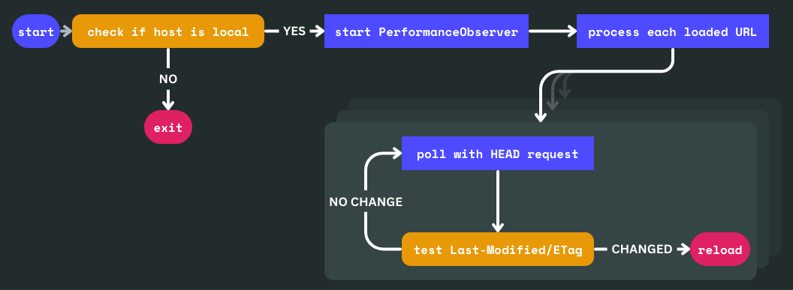

When developing my website, I’m using a simple client-side script to automatically reload the page whenever I make a change to the source files. GitHub repo
Since it’s not coupled to any particular backend, I could continue using python3 -m http.server -d ./site/ or whatever local web server I wanted and it would still work. I could clone this repo on a new machine and get going with only preinstalled programs: a text editor, a browser, and a Python (or whatever) HTTP server. And live reload should* just work.
Here’s the code (39 lines):
let watching = new Set();
watch(location.href);
new PerformanceObserver((list) => {
for (const entry of list.getEntries()) {
watch(entry.name);
}
}).observe({ type: "resource", buffered: true });
function watch(urlString) {
if (!urlString) return;
const url = new URL(urlString);
if (url.origin !== location.origin) return;
if (watching.has(url.pathname)) return;
watching.add(url.pathname);
console.log("watching", url.pathname);
let lastModified, etag;
async function check() {
const res = await fetch(url, { method: "head" });
const newLastModified = res.headers.get("Last-Modified");
const newETag = res.headers.get("ETag");
if (
(lastModified !== undefined || etag !== undefined) &&
(lastModified !== newLastModified || etag !== newETag)
) {
location.reload();
}
lastModified = newLastModified;
etag = newETag;
}
setInterval(check, 1000);
}
Chuck it into your HTML
<script src="https://kalabasa.github.io/simple-live-reload/script.js"></script>
It should just work! ✨
*Check the README for more details.
How it works, in a nutshell
PerformanceObserver — This class was intended to measure performance of things like network requests. But in this case it was repurposed to record requested URLs so we can watch them for changes. This includes lazy-loaded resources, and resources not in the markup (e.g. imported JS modules)!
HEAD — Upon recording a requested URL, start polling the URL with HEAD HTTP requests to get resource metadata. Frequent polling should be fine if you’re using a local server which is what I would expect for development. The response returned by HEAD contains metadata useful for determining when to refresh.
Last-Modified and ETag — These are the headers used to indicate when the underlying resource has changed. The script triggers a location.reload() when any of these change.

Story time
I was directly inspired by livejs (2004), which polls headers as well. However, it has not been updated for modern browsers. Instead of watching network requests, it scans the markup for <script> and <link> (CSS) resources.
In fact, I’ve been using livejs for a long while. I’ve never been fond of the other solutions which require integration with your local filesystem, via extra programs that you install and run. They always seem to run slow or take up lots of resources, and sometimes choke if there are errors.
I’m planning to make a fine-grained version of this module. Simple live reloading is fine, but a more advanced hot reloading that doesn't always refresh the whole page would be great. For the modern web, the advanced version must be able to hot reload WebComponents in place, and do other fun stuff. I wonder if it’s even possible. 🤔
GitHub repo: Kalabasa/simple-live-reload